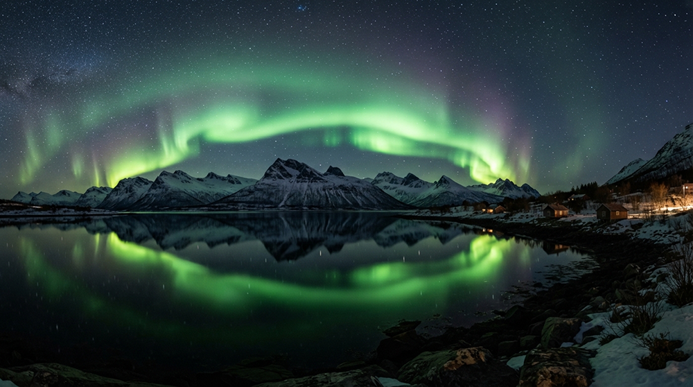
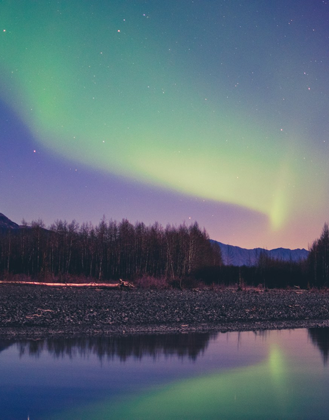
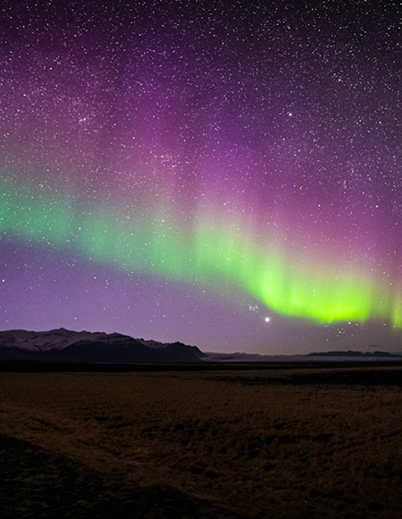
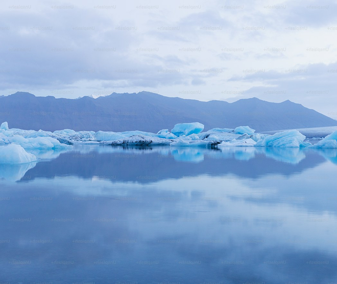
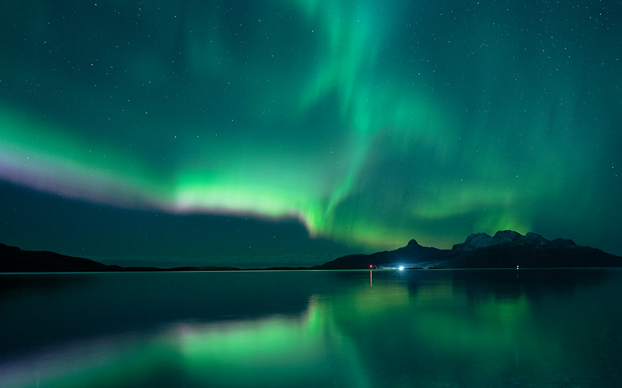
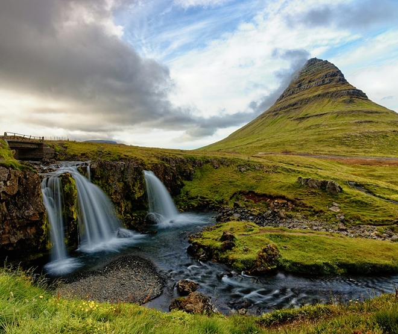
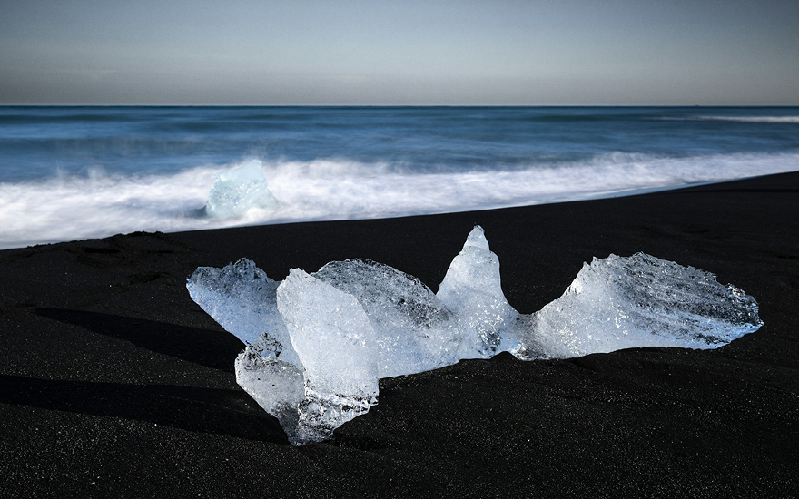

AURORA

MYSTICAL Symphony of Night & Light
Beneath the pure, light-polluted-free night sky of Iceland, nature stages its most brilliant and mystical performance. The dancing green auroras gliding over glaciers and black sand beaches offer a breathtaking, once-in-a-lifetime emotion.
Experience the true northern lights where primeval magic comes alive. As emerald ribbons ripple across the silent arctic horizon, every frozen moment feels like stepping into another world. Let the untamed beauty of the North awaken your deepest sense of wonder.


COLORS OF THE ARCTIC
When solar winds meet the Earth's magnetic field, Iceland's sky transforms into a living canvas of emerald, violet, and crimson. Every appearance is completely unique—shifting from a quiet, ghostly mist to a vibrant, fast-moving curtain of light that paints the frozen wilderness.
From late August to mid-April, long arctic nights create the ultimate stage for aurora hunting. Clear, crisp skies and minimal artificial light allow even the faintest solar activity to shine brightly across the horizon, rewarding patient travelers with unforgettable nocturnal views.
ICELANDIC NIGHTSCOSMIC SYMPHONY
AURORA DASHBOARD
I get a lot of inspiration from my everyday surroundings.
-
- Cloud Cover
- 20%
- (Mostly Clear)
-
- Temperature
- -2°C
- (Feels Like -6°C)
-
- Visibility
- 10 km
- (Clear View)
-
- Wind Speed
- 15 km/h
-
- Humidity
- 75%
-
- Daylight Hours
- 4h
- (Peak Season)
AURORA BEST SPOTS
The purest night, a masterpiece of light blooming in the dark
-

Jokulsarlon
Glacier lagoon showing magnificent aurora reflections.
-

Vestrahorn
A breathtaking coastal mountain where glowing aurora reflect off the mirror-like black sand.
-

Kirkjufell
Iconic mountain with waterfalls under northern lights.
-

Diamond Beach
Glistening ice diamonds scattered across black sand under a mesmerizing green sky